HTTPS 강제 정책이 유지되지 않습니다
- 관측 근거
- 예시 응답에서 HSTS의 max-age 값이 0초입니다.
- 예상 영향
- 브라우저가 이후 방문에도 HTTPS를 사용하도록 하는 정책이 유지되지 않습니다.
- 개선 방법
- HTTPS 적용 범위를 확인한 뒤 HSTS 유지 기간을 설정하고, 변경된 응답 헤더를 다시 확인합니다.
로켓보안 웹 모의해킹
어떤 설정에서 문제가 보였는지, 왜 바꿔야 하는지, 수정 후 무엇을 확인할지. 로켓보안이 개발팀에 전달하는 보고서를 먼저 읽어보세요.
오름상점
점검 보고서

샘플 보고서
점검 항목을 고르면 관측 근거와 영향,
개선 방법을 함께 읽을 수 있습니다.
진행 절차
대상 도메인과 로그인 후 기능, 제외할 경로와 허용 시간대를 정하고 담당자의 서면 승인을 확인합니다.
관측한 설정, 예상 영향, 권고 사항을 한 항목에 담습니다. 개발팀은 이 내용을 바탕으로 담당자와 수정 순서를 정할 수 있습니다.
조치한 항목의 재점검을 요청하면 최초 결과와 변경 후 증적을 대조합니다.
재점검 요청 체험가상 고객 오름상점의 보고서 열람, PDF 저장, 항목별 재점검 요청과 모의 결제를 체험할 수 있습니다. 체험 내용은 현재 브라우저 탭에 보관됩니다.
공개 체험은 샘플 자료로 진행합니다. 실제 점검은 대상 소유자를 확인하고 허용 범위와 일정을 서면으로 합의한 뒤 시작합니다.
인증 준비, 개인정보처리방침 평가와 증적 정리는 컨설팅 안내에서 확인할 수 있습니다.
대상 도메인과 확인하고 싶은 기능, 희망 일정을 알려주세요.